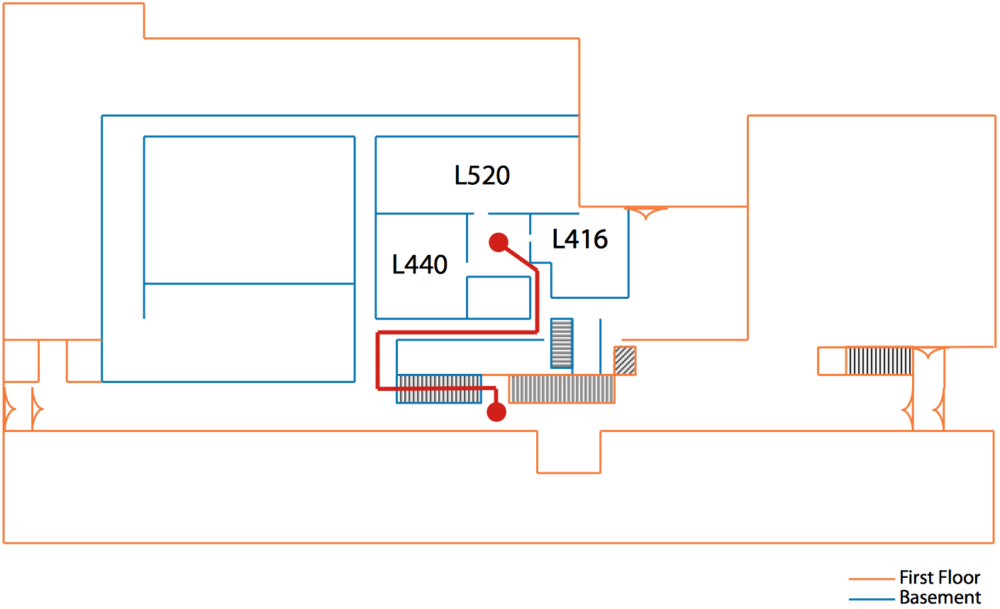

All workshops will be held in the EWS computer laboratory, L440 Digital Computer Laboratory. There is no sign-up for this series—walk-ins are welcome and encouraged!
L440 DCL is a little tricky to find if you haven't been there before. It's located in the basement, and can be accessed by going down the main staircase in DCL and turning right.

Setup (Canopy Python and Jupyter Notebook)
For most of the lessons, we will require outside modules. While several methods for managing your own library of modules exists, we will use Enthought Canopy, which is installed on your EWS machines already. However, it works best when you are logged in with a Canopy user account, and free academic accounts are available and recommended.
To load Canopy, please input the following at a terminal window:
module load canopy
Introduction to Python
January 28, 10 am–noon
Numerical & Scientific Programming with Python (numpy, scipy)
February 4, 10 am–noon
We will use Jupyter notebooks (formerly I-Python), which are interactive worksheets for code. To open these, please navigate on the command line to your home directory (or wherever your downloaded ipynb files are located), and open the Jupyter notebook interface:
cd
module load canopy
ipython notebook &
Lesson Workbooks
- Blank workbook (please download)
- Full workbook (use for your later reference)
- Static view of workbook (if you don't have Python installed)
Data Analysis with Python (pandas)
February 11, 10 am–noon
Plotting in Python (matplotlib)
February 18, 10 am–noon
Advanced Programming in Python
February 25, 10 am–noon
Machine Learning in Python (scikit-learn)
March 4, 10 am–noon
Error handling in Python (pdb, numerical error)
March 11, 10 am–noon
Optimizing Numerical Code in Python
March 18, 10 am–noon
About These Workshops
Contributors
Neal Davis and Lakshmi Rao developed these materials. This content is available under a Creative Commons Attribution 4.0 Unported License.

Contact
If you have any questions about course availability, concepts, or content, please contact Neal Davis, Training Coördinator for Computational Science & Engineering, at training at cse dot illinois dot edu.